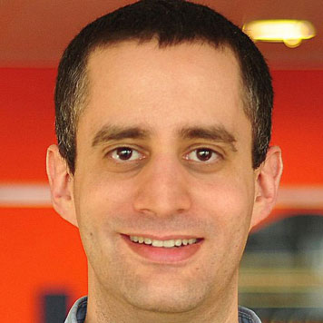

The Idea
PHP was originally created in 1994 by Rasmus Lerdorf, who created a series of scripts in the Perl language to achieve better control over his personal webpage. After rewriting his set of scripts from Perl to the more popular C, and adding the ability to interface with databases, the initial private build of PHP/FI (Personal Home Page/Forms Interpreter) became widely popular. The types of controls achievable with PHP today were nearly impossible for the lone developer at the time, so Lerdorf released his first public iteration, Personal Home Page Tools 1.0, the next year - choosing to open the source code to allow for faster development and more thorough bug testing. It is important to note that Lerdorf never intended to create a coding language, but once his tools were available to the public, they began to gain traction and evolve on their own.
To keep up with the rising demand for this new functionality, Lerdorf hired the development team of Andi Gutmans and Zeev Suraski in 1997. The most significant changes to PHP later that year when the parser was completely rewritten and PHP 3 was released as PHP: Hypertext Processor, eschewing the previous functionality for managing a personal webpage, and focusing solely on the database aspects of the software.
Over the years, functionality has improved and new features have been added continually, to the point that PHP now runs on tens of millions of websites and has become one of the most popular server-side scripting languages. In fact, the latest version was updated just last week (February 6, 2014).